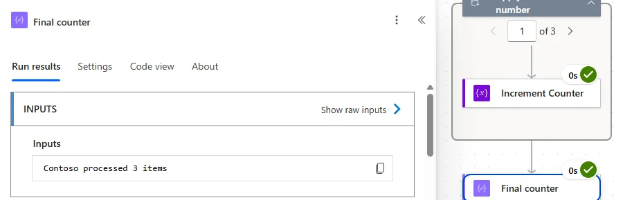

- Power Automate
- Level 1 · Foundations · 5 of 7
Variables vs Compose
Both a variable and a Compose hold a value. The difference: a variable can change during the run; a Compose can't. Picking the right one keeps flows faster and easier to read.
The difference in one picture
WhatA variable is a named box you create once and update. A Compose works out one value and keeps it.
WhyVariables are needed for things that accumulate (counters, totals, lists). Everything else is simpler as Compose.
DemoCount how many items a loop processed, then build a sentence.
Which one?
Will the value change after it's first set?
Yes
Variable: Initialize at the top, then Set / Increment / Append
No
Compose: one action, read with
outputs()| Variable | Compose | |
|---|---|---|
| Can change? | Yes: Set, Increment, Append | No, fixed once calculated |
| Where created | Only at the top level, not inside loops, conditions or scopes | Anywhere |
| Read with | variables('Counter') | outputs('Company_name') |
| In parallel loops | Risky: iterations overwrite each other | Safe: each iteration has its own result |
| Best for | Counters, totals, building a list | Constants, calculated values, debugging |
The demo: count items in a loop
The flow
Initialize variable Counter = 0
Compose Company name = "Contoso"
Apply to each over
createArray(1, 2, 3): Increment Counter by 1Compose Final counter → "Contoso processed 3 items"
Counter, iteration by iteration
| Iteration | Item | Counter before | Counter after |
|---|---|---|---|
| 1 of 3 | 1 | 0 | 1 |
| 2 of 3 | 2 | 1 | 2 |
| 3 of 3 | 3 | 2 | 3 |
The Compose Company name never changes, so it doesn't need to be a variable.


concat(outputs('Company_name'), ' processed ', string(variables('Counter')), ' items')| Piece | What it does |
|---|---|
outputs('Company_name') | The Compose value: Contoso. |
variables('Counter') | The variable after the loop: 3 (an integer). |
string(...) | Converts 3 to text so concat can join it. |
The variable actions
| Action | Works on | Example |
|---|---|---|
| Initialize variable | Any type; top level only | Counter, Integer, 0 |
| Set variable | Any type; replaces the value | Status = 'Done' |
| Increment / Decrement variable | Integer or Float | Counter + 1 |
| Append to string variable | String | Log += 'line' |
| Append to array variable | Array | Ids += 42 |
Watch out
- A variable can't be set from itself (
Set Counter = add(variables('Counter'), 1)is refused). Use Increment. - Turning on loop concurrency with variables gives wrong totals. Keep such loops sequential, or collect Compose outputs after the loop (see Conditions, Switch and loops).
- A variable just to hold a constant adds an action and hides intent. Use Compose.
New to this? Start from the basics optional
Initialize variable: creates a variable with a name, type and starting value. Top level only.
Apply to each: a loop that runs its actions once per item in a list.
Build it step by step optional
- Create an instant flow Variables vs Compose.
- Add Initialize variable: Counter, Integer, 0. Add a Compose Company name = Contoso.
- Add Apply to each over
createArray(1, 2, 3); inside, Increment variable Counter by 1. - After the loop, add Compose Final counter with the concat expression.
- Test and step through the iterations.
Common mistakes
- Concurrency on a loop that changes a variable.
- A variable for a value that never changes.
- Trying to Initialize a variable inside a loop or condition.